다운로드가 안 되면교안이 다른 페이지 안에 들어가 있으면 다운로드가 막힐 때가 있어요. 강사가 단톡방에 올린 예제 묶음(zip)을 받으세요.
STEP 2
잉크스케이프로 SVG 다시 잡기
지난 시간 「최적화 SVG로 저장했는데 150KB가 넘는다」를 오늘 해결해요.
쉽게 말하면 — 용량은 저장 방법이 아니라 조각(노드) 수가 정해요. 조각을 줄이는 건 ① 그림 ② 쌓기 ③ 스캔 수예요.
복습지난 시간 막혔던 곳 4가지
막힌 곳
왜 그랬나
오늘 고치는 법
최적화 SVG로 저장해도 150KB 넘음
「쌓기」가 꺼져 있어 색마다 구멍 뚫린 조각이 따로 생김 + 눈송이 무늬가 촘촘해 조각(노드)이 많음
쌓기 켜기, 스캔 = 색 수 + 1
스캔을 4로 줄였더니 양말 윗부분이 날아감
「배경 제거」는 가장 밝은 색을 지워요. 흰 배경과 크림색이 같은 칸으로 묶였어요
프롬프트에서 연회색 배경으로 생성
저장한 SVG에 원본 그림이 같이 들어감
추적 결과만 남기고 원본을 안 지움
원본 선택 → Delete
페이지와 그림 크기가 안 맞음 (디자인허브 거부 1위)
페이지 맞춤을 안 함
Shift+Ctrl+R
도식「쌓기」가 뭐예요?
빨강초록금색크림
쌓기 끔색마다 다른 색 자리를 구멍으로 뚫은 조각을 만들어요. 구멍 테두리마다 노드가 생겨서 무거워요. → 흰 배경 6색: 226KB
쌓기 켬밑에 큰 색판을 깔고 그 위에 작은 색판을 겹쳐 쌓아요. 구멍이 없어 노드가 적어요. → 같은 그림: 123KB, 회색 배경 5스캔: 17KB
프롬프트 카드 ①SVG가 잘 되는 그림 만들기
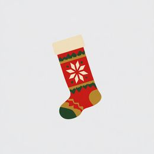
✅ 연회색 배경 · 4색
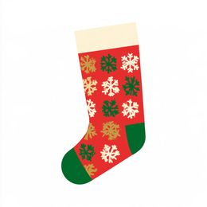
⚠️ 흰 배경 · 눈송이 촘촘
미드저니 · 그대로 복사해서 쓰세요
flat vector icon of a Christmas stocking with a snowflake pattern, minimal bold shapes, only 4 solid colors in red, green, gold and cream, no gradient, no texture, no shading, no outline stroke, single object, centered, isolated on a plain light gray background --raw --stylize 50
영어
한글 뜻
왜 넣나요
flat vector icon
평면 벡터 아이콘
입체감·그림자 없이 색면으로만
minimal bold shapes
단순하고 굵은 모양
조각(노드) 수가 줄어요
only 4 solid colors in …
딱 4색, 색 이름 지정
스캔 수를 정할 수 있어요 (4색 + 배경 1 = 5)
no gradient / texture / shading
그라데이션·질감·음영 없음
있으면 색이 수십 개로 쪼개져요
no outline stroke
외곽선 없음
검은 선도 한 색·한 조각이 돼요
single object, centered
물건 하나, 가운데
판매 요소로 쓰기 좋아요
isolated on a plain light gray background
단색 연회색 배경
배경 제거가 배경만 정확히 지워요
--raw
미드저니 꾸밈 줄이기
지시를 더 그대로 따라요
--stylize 50
미적 꾸밈 낮게
장식이 덜 붙어요
주의흰 무늬·크림색·연노랑이 들어가는 그림은 반드시 회색(또는 진한 단색) 배경으로. 흰 배경이면 배경 제거할 때 흰 무늬까지 같이 지워져요.
한 걸음 더색 이름만 바꿔 시리즈로: only 4 solid colors in navy, white, silver and ice blue → 겨울 시리즈. 같은 문장 틀 = 같은 톤 세트.
Update preview를 눌러 미리보기에서 사라진 색이 없는지 확인해요. 크림색이 없어졌으면 스캔을 1 올려요.
적용을 누르고 잠깐 기다려요. 결과는 원본 바로 위에 똑같이 겹쳐서 생겨서, 변화가 없어 보여요.
그림을 마우스로 끌어 옆으로 옮겨 보세요. 원본과 결과가 두 개로 보여요. 상태 줄에 「Group of 4 objects」 = 추적 결과(4색 그룹)예요.
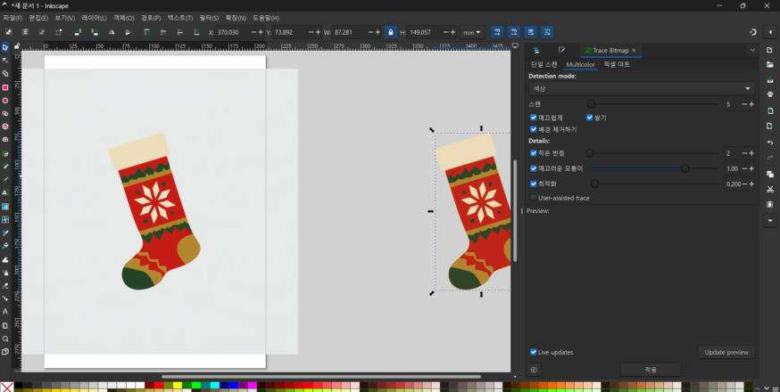
왼쪽 = 원본(이미지) · 오른쪽 = 추적 결과(Group of 4 objects)
남아 있는 원본을 클릭 → 상태 줄이 「이미지」인지 확인 → Delete. 옆으로 옮긴 결과는 그대로 둬도 괜찮아요 — 다음 단계에서 페이지가 결과에 맞춰져요.
결과를 선택한 채 Shift+Ctrl+R → 페이지가 그림 크기에 딱 맞춰져요. 디자인허브 거부 사유 1위(여백)를 막는 단계라 절대 빼먹지 마세요.
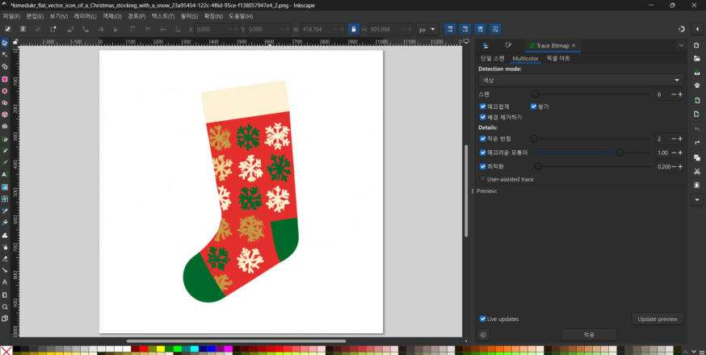
흰 페이지 = 그림 크기와 같아짐
(확인) 노드 수 보기: 그림 클릭 → Ctrl+Shift+G(그룹 해제) → N(노드 도구) → Ctrl+A → 상태 줄에 「○○ of ○○ nodes」
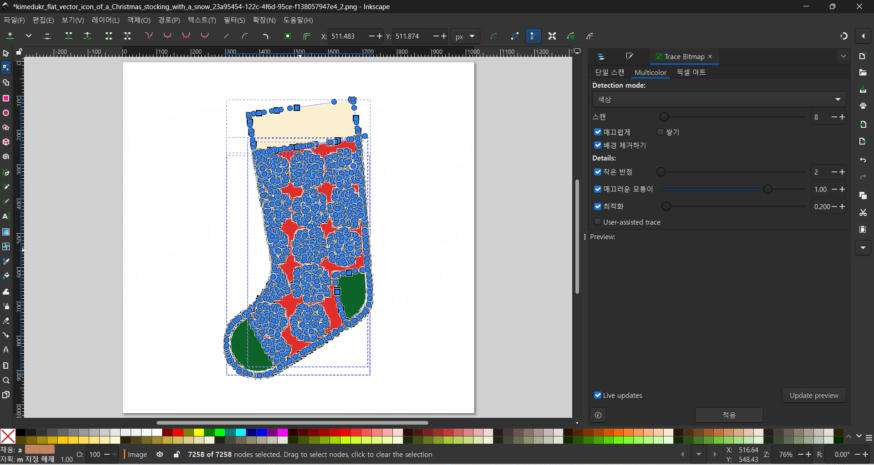
파란 점 = 노드. 흰 배경·쌓기 끔 양말은 7,258개 → 무거워요
맨 위 메뉴
파일→사본 저장(Shift+Ctrl+Alt+S)
→ 저장 위치는 왼쪽에서 다운로드 선택 → 「파일 형식」을 눌러 목록에서 「최적화된 SVG (*.svg)」 선택 → 파일 이름 입력 → 저장
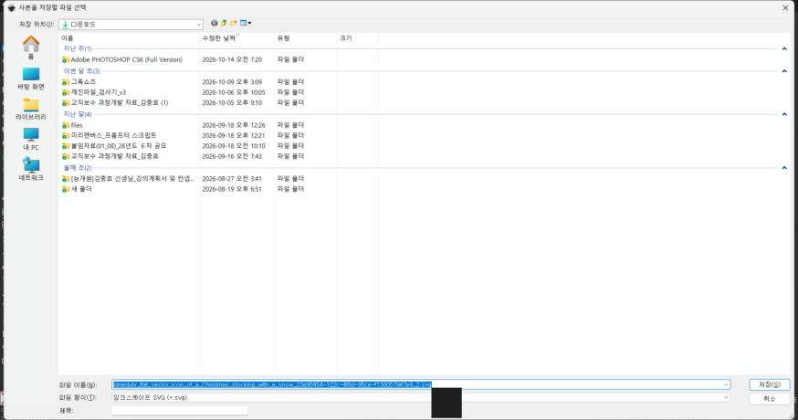
파일 이름·파일 형식 칸
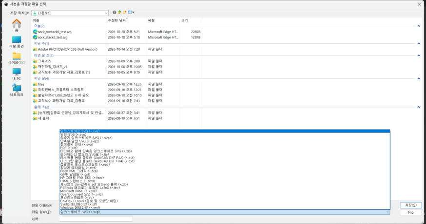
목록에서 「최적화된 SVG」
「최적화된 SVG 출력」 창이 떠요. 그대로 확인.
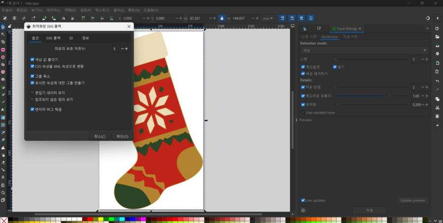
좌표 유효 자릿수 5 · 체크 그대로 → 확인
파일 탐색기 「다운로드」에서 크기 확인 → 150KB 이하면 디자인허브 SVG로 올릴 수 있어요.
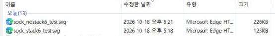
쌓기 끔 226KB → 쌓기 켬 123KB
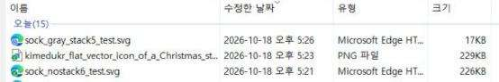
회색 배경 · 스캔 5 · 쌓기 → 17KB
막힘 사전이럴 땐 이렇게
화면·증상
조치
비트맵 추적 메뉴가 회색
그림을 한 번 클릭해 선택한 뒤 다시
적용했는데 변화가 없어 보임
결과가 원본 위에 겹쳐 있어요. 끌어서 옮겨 보기
저장했는데 용량이 그대로 큼
원본 이미지가 같이 저장됨 → 13번 다시
색 하나가 통째로 사라짐
스캔 +1, 또는 회색 배경으로 다시 생성
미리보기가 회색으로만 나옴
Detection mode가 「명도 단계」 → 「색상」
미리보기가 안 바뀜
Update preview 클릭
맥(Mac) 사용자
단축키의 Ctrl → ⌘. 메뉴 이름(경로 → 비트맵 추적)은 같아요
한 걸음 더디자인허브가 원하는 「색 정리」
디자인허브 SVG 규정: 「사용자가 색상을 바꿀 수 있게 색상 정리가 되어 있어야」 해요.
쌓기로 만든 SVG는 색마다 한 덩어리라 미리캔버스에서 색 4개만 딱 바뀌어요 → 좋은 SVG
노드가 많고 쌓기를 끈 SVG는 같은 색이 수십 조각으로 나뉘어 색 바꾸기가 불편해요
확인: 미리캔버스에 내 SVG를 올려 색상 칸이 몇 개로 뜨는지 보기
STEP 3
복잡한 그림은? — 잉크스케이프 vs 포토피아
웹툰풍 인물처럼 복잡한 그림으로 두 방법을 실제로 비교했어요.
쉽게 말하면 — 단순한 그림은 SVG, 복잡한 그림은 Ctrl+L 한 번, 그래도 무거우면 PNG로 파는 게 정답이에요.
프롬프트 카드 ②SVG로 피해야 할 그림
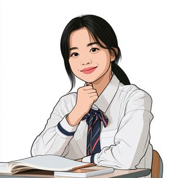
웹툰풍 인물
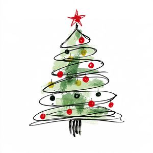
스케치·질감
예: 스케치풍 트리 (일부)
a sketchy digital illustration of a christmas tree on a clean white background. the tree is shaped with loose, flowing black line work forming stacked horizontal sections. the interior is decorated with irregular patches of light green and medium green textured coloring. a hand drawn red star is placed on the top of the tree.
(용량 줄이기) 이미지 → 이미지 크기 → 너비에 512 입력 → 확인. 작게 만든 뒤 벡터화하면 조각이 줄어요.
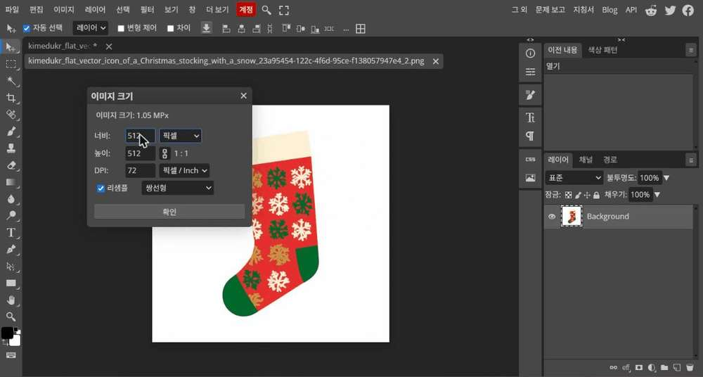
너비 512 · 높이는 자동
이미지 → 비트맵 벡터화…
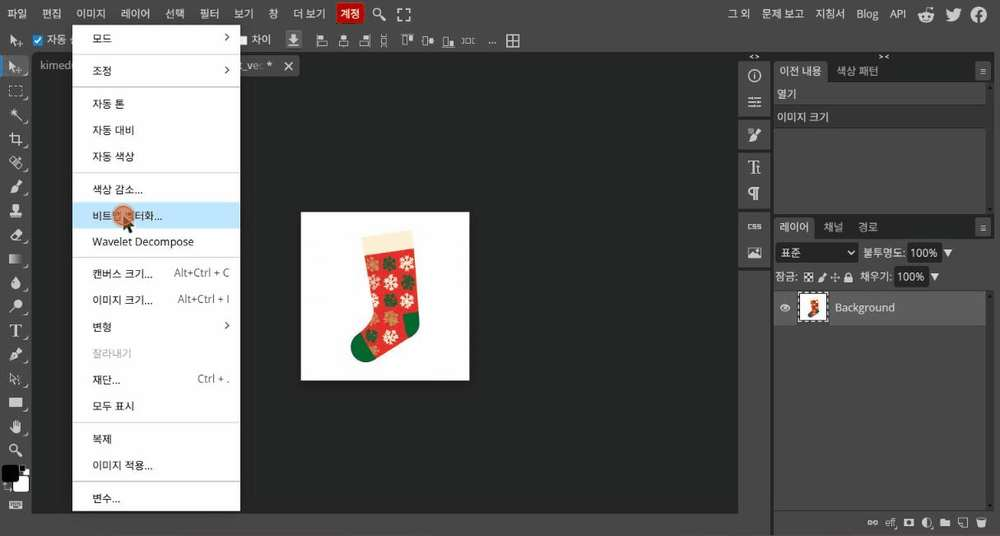
이미지 메뉴 가운데쯤 「비트맵 벡터화…」
창 위쪽 줄에 옵션이 있어요. 처음엔 색 20 · Photo로 열려요 — Photo는 사진용이라 조각이 아주 많아요.
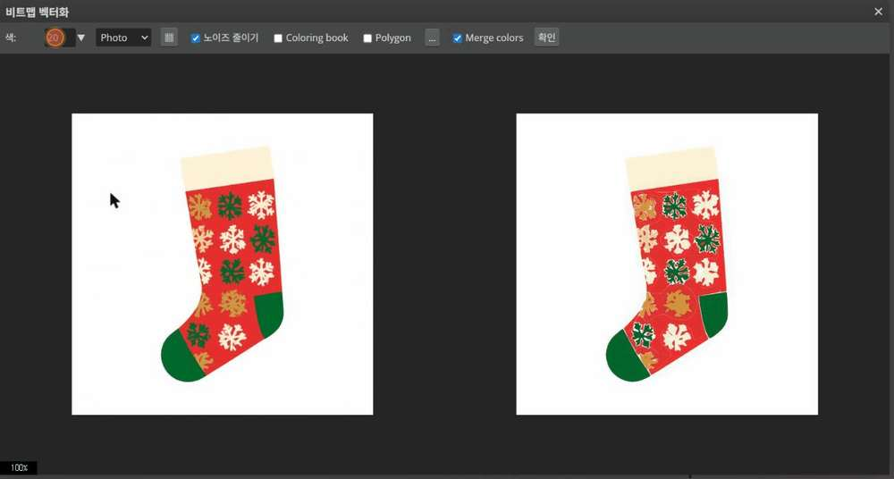
색 · Photo/Cartoon · 노이즈 줄이기 · Coloring book · Polygon · Merge colors · 확인
색: 6, 모드: Cartoon(색면이 뚜렷한 그림), 노이즈 줄이기 ✔ · Merge colors ✔ → 오른쪽 미리보기 확인 → 확인
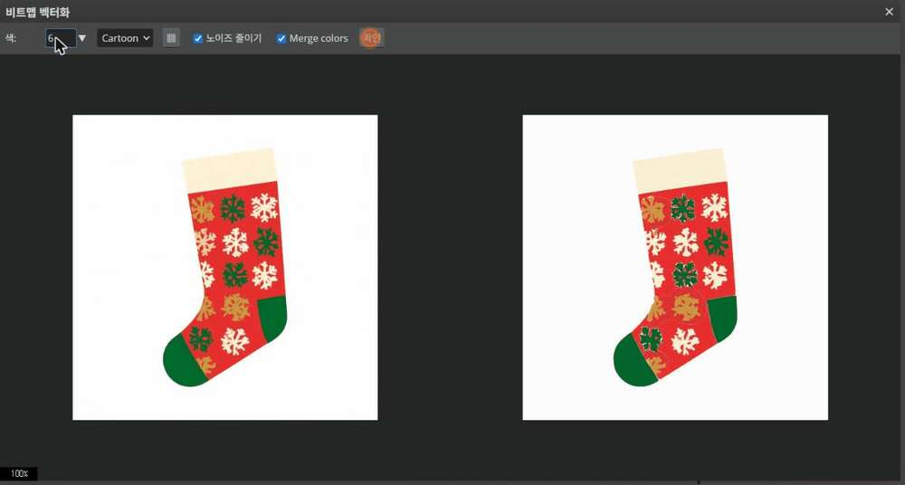
Cartoon으로 바꾸면 Coloring book·Polygon 칸이 사라져요
확인을 누르면 위쪽에 탭이 하나 더 생기고 결과가 그 새 탭에 열려요. 오른쪽(새) 탭에서 계속하세요. 레이어 창에 Path 0, Path 1, …이 생겨요. 6색이어도 조각은 13개쯤 나와요(같은 색이 떨어져 있으면 따로 세요).
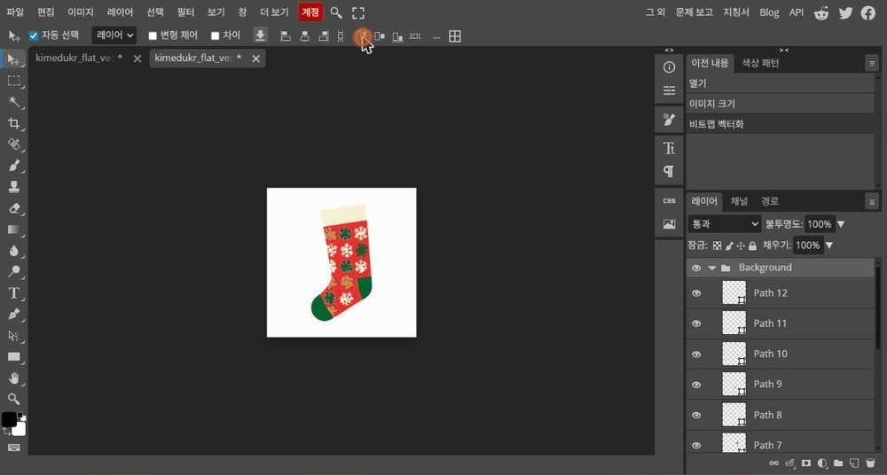
Background 폴더 안에 Path 12 … Path 0
레이어 창을 맨 아래까지 내려 Path 0(흰 배경판)을 클릭 → 레이어 창 아래 휴지통
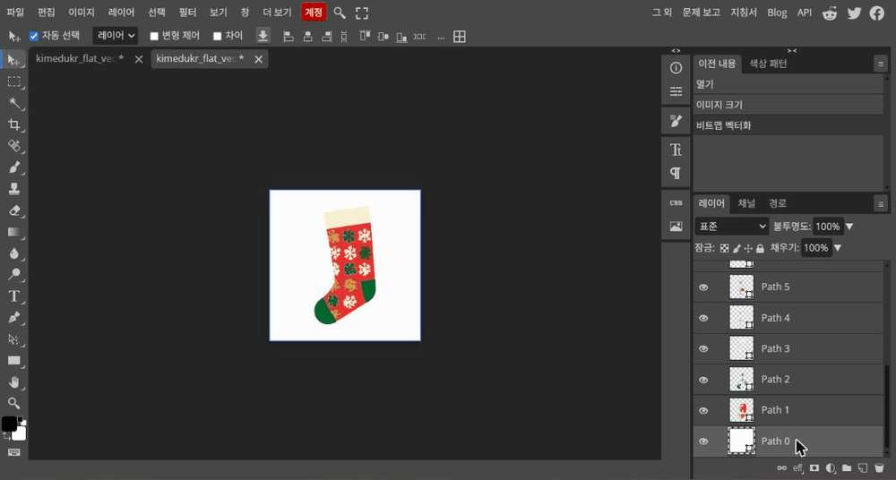
Path 0 = 흰 배경 → 지워야 투명해져요
배경이 체크무늬(투명)로 바뀌면 성공. 디자인허브용이면 이미지 → 재단 → 「투명한」으로 여백도 잘라요.
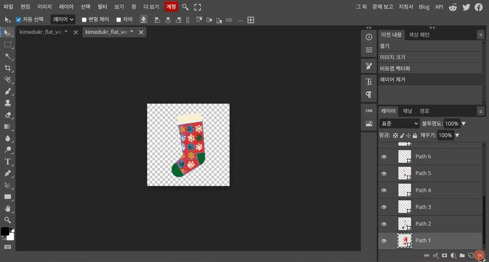
체크무늬 = 투명
파일 → 내보내기 형식 → SVG → 「add raster graphics」는 끈 채로 → 저장. 아래 칸에 예상 용량이 보여요.
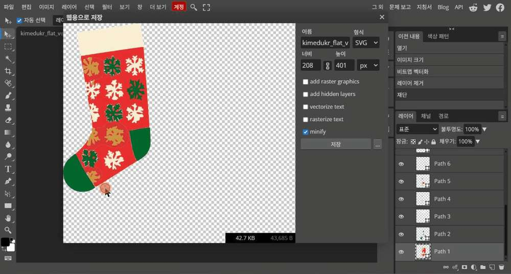
오른쪽 아래 42.7KB = 예상 용량 · minify ✔
저장할 때 「Are you using an ad blocker?」 창광고 차단 프로그램 안내예요. 확인을 누르면 저장돼요.
막힘 사전벡터화에서 막히면
증상
조치
이미지 메뉴 아래쪽이 안 보임
메뉴 위에서 마우스 휠을 내려요
Path 0을 지웠는데 흰색이 남음
흰색 조각이 또 있어요. 다른 흰 Path도 찾아 지우기
예상 용량이 150KB를 넘음
색 수를 줄이거나, 이미지 크기를 더 작게(512 → 400) 해서 다시
원래 색 하나가 없어짐
색 수 +1, Merge colors 끄고 다시
원본 탭에서 내보내기 함
위쪽 탭 중 오른쪽(새) 탭으로 가서 다시 내보내기
한 걸음 더 — Ctrl+L 효과 직접 재 보기잉크스케이프 결과를 클릭 → Ctrl+Shift+G(그룹 해제) → Ctrl+A(전부 선택) → Ctrl+L 한 번 → 사본 저장. Ctrl+L 전후 파일 크기를 탐색기에서 비교해 보세요.
이해Cartoon · Photo · 색 수
Cartoon — 색면이 뚜렷한 일러스트·아이콘. 우리 요소는 거의 이것
Photo — 사진·그라데이션. 조각이 많아져 용량이 커요
색 수 — 그림에 실제로 보이는 색 + 1(배경). 너무 적으면 비슷한 색이 합쳐져 원래 색이 날아가요
Merge colors — 비슷한 색을 하나로. 켜면 조각이 줄어요
비교 실험같은 흰 배경 양말: 포토피아 Cartoon 6색 54KB(흰 배경판 포함) → Path 0 삭제·재단 후 42.7KB · 잉크스케이프 쌓기 6스캔 123KB. 포토피아가 가볍지만 경계가 거칠어요. 디테일이 중요하면 잉크스케이프.
STEP 4
포토피아로 투명 GIF — 종 3장이 흔들리는 상품으로
레이어 1장 = 프레임 1장. 맨 아래 레이어가 첫 장면이에요.
쉽게 말하면 — 같은 그림, 동작만 다른 3장을 겹쳐 놓고 「프레임으로 만들어」라고 하면 움직이는 그림이 돼요.
도식레이어가 프레임이 되는 원리
지금 보이는 프레임대기 중 레이어
부메랑: 1→2→3→2→1… 처럼 왔다 갔다. 3장만으로 자연스럽게 흔들려요.
프롬프트 카드 ③GIF용 — 같은 그림, 동작만 다르게
1장(기본) · 미드저니
flat vector icon of a Christmas bell with a ribbon, simple bold geometric shapes, only 4 solid colors, no gradient, no texture, no shading, no outline stroke, single object, centered, isolated on a pure white background --raw --stylize 50
2장·3장: 1장을 「프롬프트에 첨부」(이미지를 프롬프트 창으로 끌어 놓기) → 아래처럼 한글로 바꿀 것만 말해요.
2장 · 1장 첨부 후
종(벨)을 오른쪽으로 45도 기울여 줘. 색·리본·크기는 그대로
3장 · 1장 첨부 후
종(벨)을 왼쪽으로 45도 기울여 줘. 색·리본·크기는 그대로
한글이 잘 안 먹으면 — 영어로the same bell tilted 45 degrees to the right, same colors and ribbon, white background
주의
새 프롬프트로 3번 따로 만들면 리본 색·모양이 달라져 GIF가 깜빡거려요 → 반드시 1장을 첨부해서 편집
GIF는 투명을 「있다/없다」로만 처리해요. 경계가 흐린 그림은 테두리가 지저분 → 굵은 단색 그림이 유리
종에는 흰색·크림색이 없어서 흰 배경으로 만들어도 괜찮아요 (흰 무늬가 있는 양말은 회색 배경 — STEP 2)
한 걸음 더「종(벨)이 살짝 위로 튀어 오름」 「리본이 바람에 휘날림」처럼 동작을 4~5장으로 늘리면 더 부드러워요. 단, 장수가 늘수록 GIF 용량도 커져요(디자인허브 GIF 최대 25MB).
photopea.com 접속 → 맨 위 파일 → 열기… → 첫 번째 그림(똑바로 선 종)을 열어요.
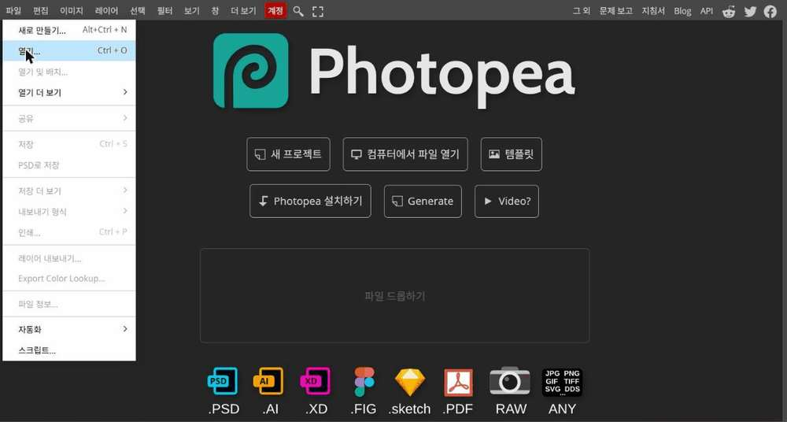
파일 메뉴: 열기… / 열기 및 배치…
흰 배경 종이 열렸어요.
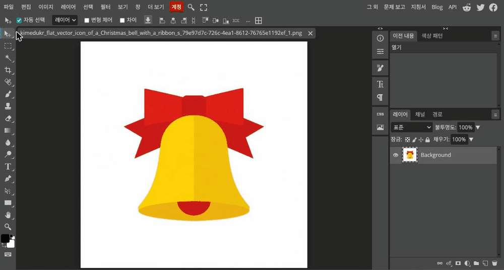
흰 배경이 있는 상태
맨 위 선택 → Remove BG 한 번 클릭.
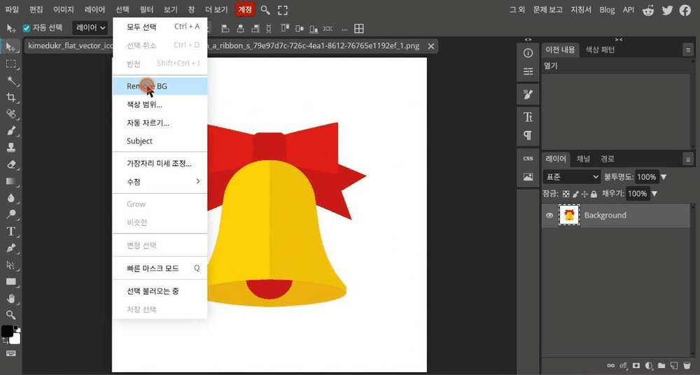
선택 메뉴 네 번째 줄 「Remove BG」
배경이 체크무늬(투명)로 바뀌면 끝. 레이어 옆에 흑백 네모(마스크)가 붙어요. 「For a better result, press the button again」이 뜨면 한 번 더 누르면 더 깔끔해져요.
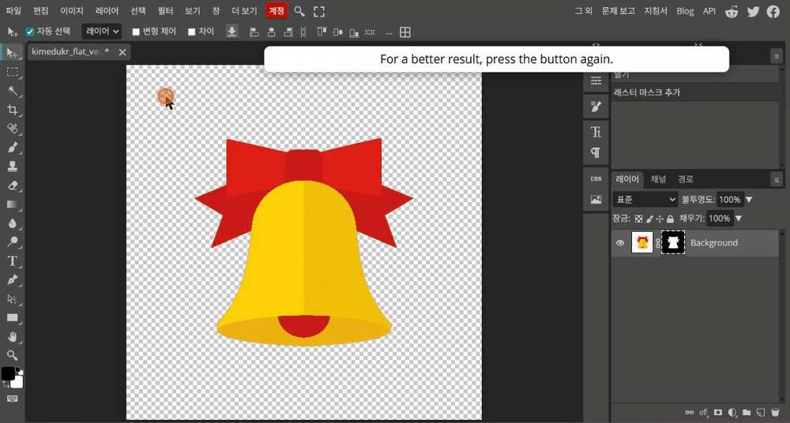
체크무늬 = 투명 · 레이어에 마스크
파일 → 열기 및 배치… → 나머지 2장을 Ctrl 누른 채 함께 선택 → 열기.
2·3장도 배경이 흰색이라면 먼저각각 파일 → 열기 → 선택 → Remove BG → 파일 → 내보내기 형식 → PNG로 저장한 뒤, 그 투명 PNG를 여기서 배치하세요. 흰 배경 그대로 겹치면 GIF가 하얗게 덮여요. (예제의 「투명 PNG」는 이미 배경이 빠져 있어요)
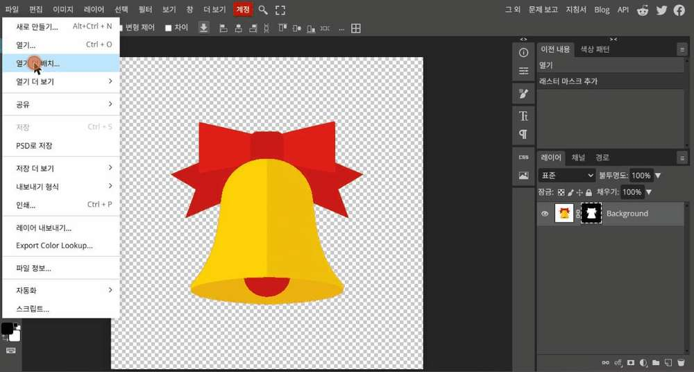
「열기…」 바로 아래 「열기 및 배치…」
들어온 그림은 75% 크기로 작게 들어와요. 위쪽 막대의 「너:」(너비)·「높:」(높이) 칸에 75%가 보이죠?
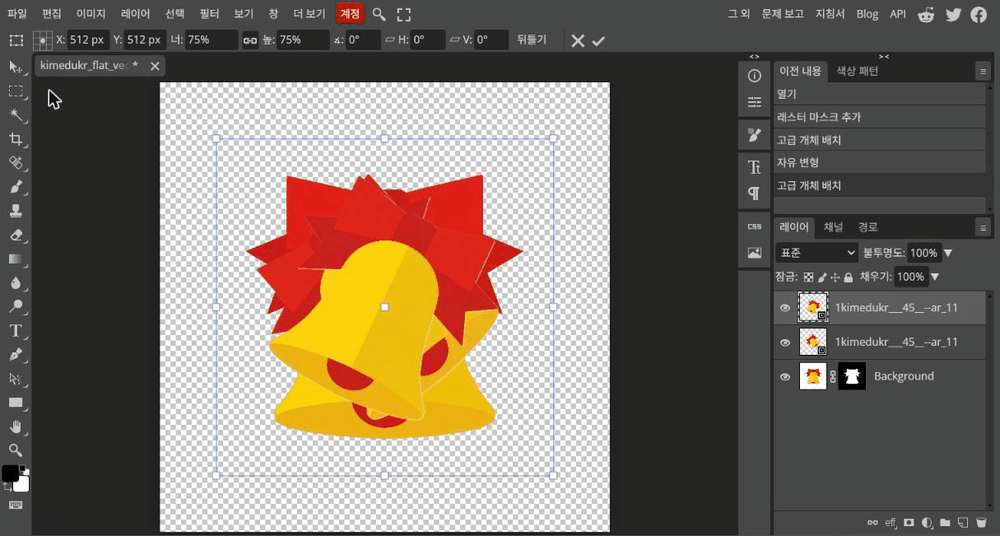
위쪽 막대 너: 75% · 높: 75%
「너:」 칸을 클릭해 100%, 「높:」 칸도 100% 입력 → Tab
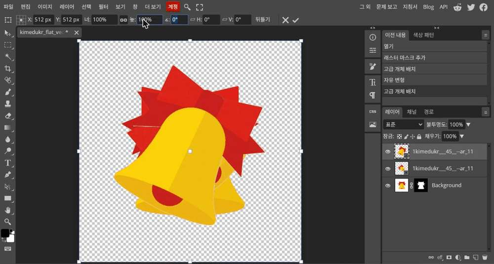
너: 100% · 높: 100%
위쪽 막대 오른쪽 끝 ✓를 눌러 확정.
✓ 누르면 테두리 상자가 사라져요
2장을 한꺼번에 넣으면 먼저 들어온 1장은 75%인 채로 확정돼 있어요. 그 레이어를 클릭 → 편집 → 자유 변형 → 6~8번을 한 번 더.
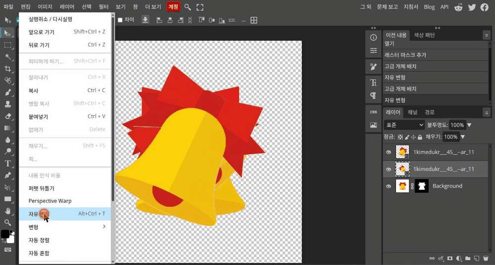
편집 메뉴 아래쪽 「자유 변형」 (Alt+Ctrl+T)
레이어 3장이 모두 같은 크기로 겹쳐졌으면 준비 끝.
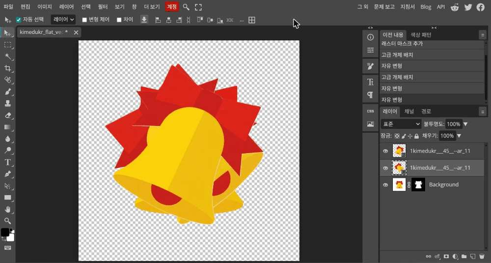
레이어 창: 맨 아래 Background = 첫 장면
따라하기 ②프레임 만들고 GIF로 저장
레이어를 전부 선택해요: 레이어 창에서 맨 위 레이어 클릭 → Shift 누른 채 맨 아래 레이어 클릭 (또는 Alt+Ctrl+A). 세 줄이 모두 색칠되면 OK.
화면 맨 위 메뉴 줄의 레이어 → 애니메이션 → Make Frames (메뉴가 길어서 아래가 안 보이면 메뉴 위에서 마우스 휠을 내려요)
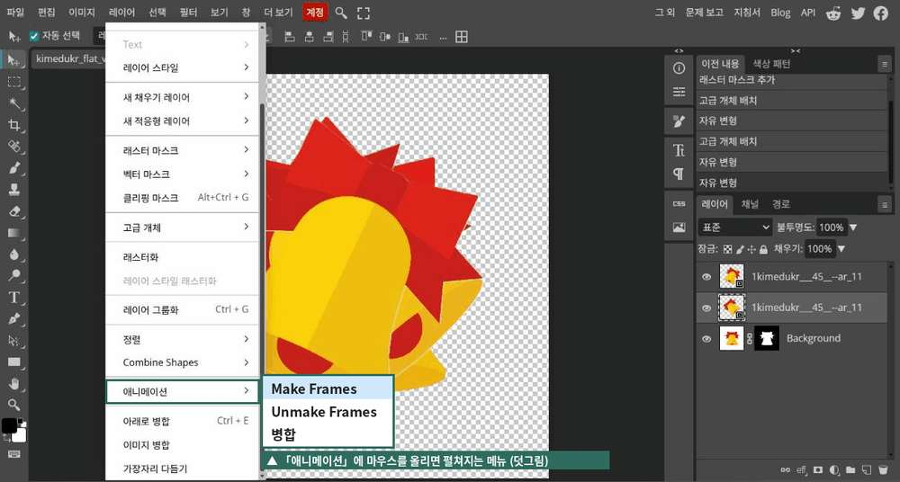
레이어 메뉴 아래쪽 「애니메이션」 → 오른쪽에 Make Frames
레이어 이름 앞에 _a_가 붙으면 프레임이 된 거예요. 이름 끝에 ,300을 붙이면 그 장면만 0.3초.
(디자인허브용) 여백 자르기: 이미지 → 재단…
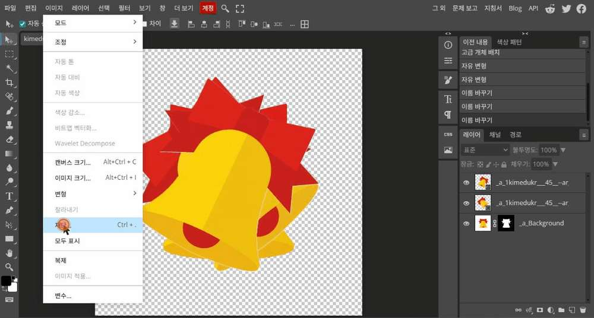
이미지 메뉴 「재단…」
「재단」 창에서 Top Left Pixel Color를 끄고 「투명한」 ✔ → Top·Left·Bottom·Right 모두 ✔ → 확인
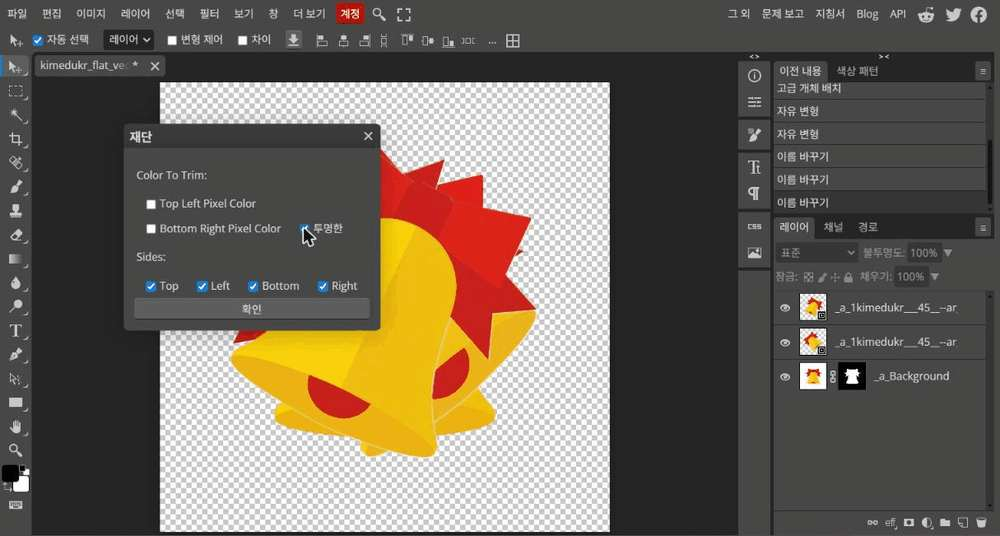
Color To Trim: 투명한 ✔
투명한 여백이 잘려 그림에 딱 맞는 크기가 됐어요. 레이어 이름에 _a_도 보여요.
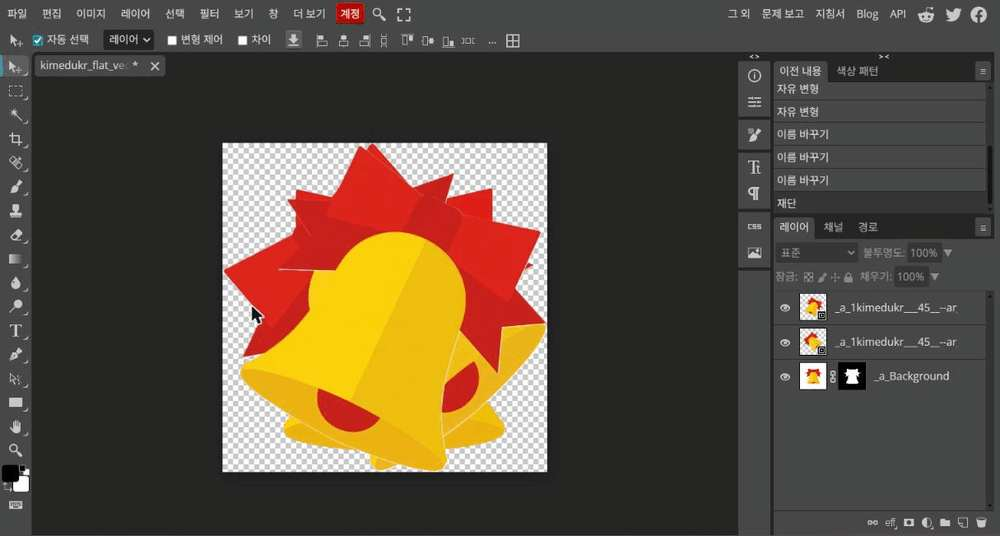
캔버스가 종 크기에 맞춰짐
파일 → 내보내기 형식 → GIF
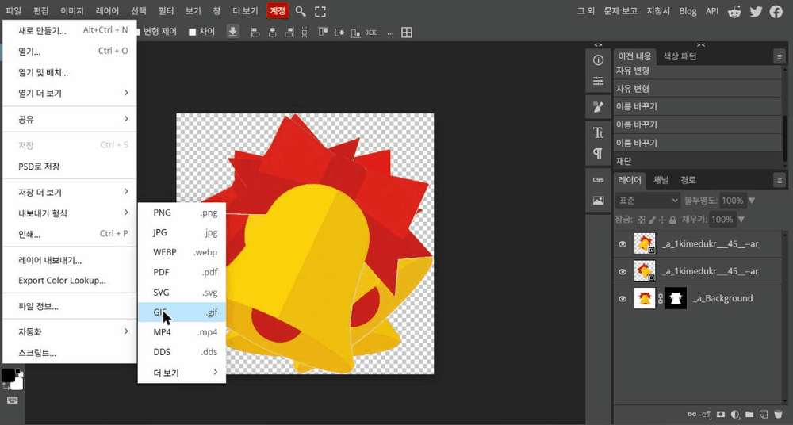
내보내기 형식 → GIF .gif
「웹용으로 저장」 창: 왼쪽에서 움직임 미리보기. 오른쪽에서 확인할 것 —
너비·높이: 디자인허브 GIF는 가로·세로 모두 700~1920px (오늘 740×750 ✅). 700보다 작으면 미드저니에서 크게(HD) 받은 원본으로 다시 하거나, 이 칸에 700 이상을 입력
Speed(속도) · Repeat 0 = 무한 반복
boomerang ✔ = 왔다 갔다 · reverse frames = 거꾸로
아래 칸 = 예상 용량
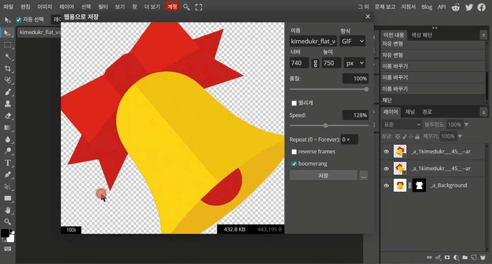
이름 · 형식 GIF · 740×750 · Speed · Repeat · boomerang
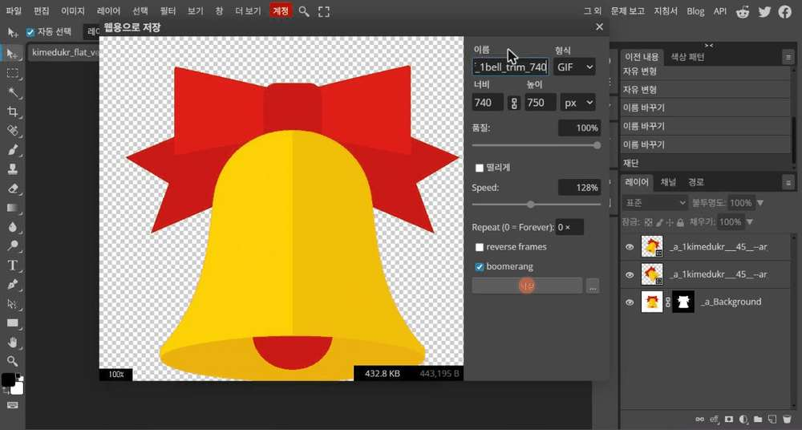
미리보기에서 흔들림 확인
이름을 입력하고 저장. 「Are you using an ad blocker?」 창이 뜨면 확인 → 다운로드 폴더에 GIF가 생겨요.
저장 창의 너비·높이를 줄이면 용량이 줄어요. 단, 디자인허브는 가로·세로 모두 700px 이상
참고: 완성본(재단 전 1024px)은 366KB, 따라하기(재단 후 740×750)는 저장 창 예상 432.8KB — 재단은 여백만 자르는 거라 용량이 꼭 줄지는 않아요
장면이 많을수록 용량↑ — 3~5장이 적당
크티에는 투명 PNG 3장 + GIF 1개를 한 상품으로 묶어 팔면 좋아요
STEP 5
판로 지도 — 되는 곳·안 되는 곳 (2026년 10월 확인)
AI로 만든 그림을 받아 주는지가 첫 번째 기준이에요.
쉽게 말하면 — 본진은 미리캔버스 디자인허브, 오늘 바로 팔려면 크티, 네이버에 진열하려면 OGQ.
도식판로 한눈에 — 높을수록 입문자에게 쉬워요
AI 허용조건부AI 불가
막대 높이 = 입문자가 오늘 바로 시작하기 쉬운 정도(가입·심사·조건을 강사가 종합한 상대 비교). 대표 사이트만 넣었어요 — 전체 목록은 아래 표.
국내국내 판로
사이트
AI 그림
특징
입문자 팁
미리캔버스 디자인허브
허용
본진. 하루 최대 20개 제출, 심사 영업일 6일 이내. SVG 150KB 이하, GIF 700~1920px
업로드 후 오른쪽 상세 정보 칸의 「생성형 AI로 만든 콘텐츠라면 체크」 → 꼭 체크
크티(ctee)
허용
심사 없음, 가입 즉시 판매, 0원 상품 가능, 수수료 11.5%
오늘 강사가 실제 등록 → STEP 6
네이버 OGQ
허용(표시 필수)
스톡 이미지 2000px 이상, 심사 최대 15영업일. 개인은 사업자 없이 가능
AI 활용 여부를 정확히 고르지 않으면 반려 → STEP 6
크라우드픽
불가
AI 생성·편집·재가공 전면 금지, 발견 시 탈퇴 사유
올리지 마세요
유토이미지
불가
개인 작가 AI 불가(제휴사만)
—
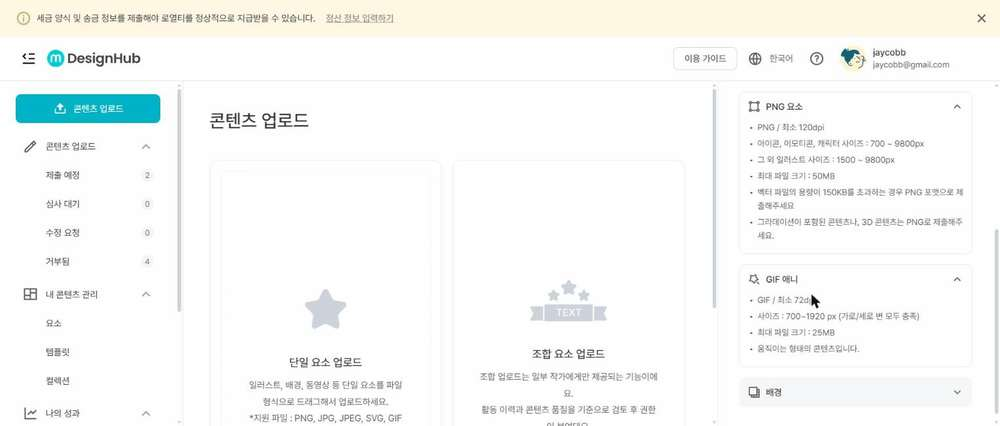
디자인허브 업로드 화면 오른쪽 「단일 요소 안내」 — PNG·GIF 규격
해외해외 판로 (소개)
사이트
AI
한 줄
어도비 스톡
허용
「생성형 AI 사용」 체크, 프롬프트에 작가 이름·실존 인물·브랜드 금지. contributor.stock.adobe.com
123RF · 드림스타임
조건부
AI 표시 조건 확인
베티지(Vecteezy)
허용
제목·키워드에 "AI generated"
마그니픽(구 프리픽)
조건부
첫 제출 150~200장 필요 → 입문자에겐 부담
셔터스톡 · 게티
불가
AI 생성물 업로드 불가
해외 사이트 조건은 이번 과정 준비 때(2026년 하반기) 조사한 내용이에요. 정책이 자주 바뀌니 가입 전에 각 사이트의 「AI 콘텐츠」 안내를 꼭 다시 보세요. 프리픽은 2026년에 「마그니픽(Magnific)」으로 이름을 바꿨어요.
홍보무료로 올려 홍보만 — 픽사베이
AI 그림 허용(AI 표시 필수), 판매 수익은 없고 후원만
신규 계정은 업로드 개수 제한이 있어요
쓰는 법: 대표작 몇 장만 무료로 → 프로필에 크티 링크 → 크티로 손님 데려오기
주의사이트 정책은 자주 바뀌어요. 올리기 전에 각 사이트의 「AI 콘텐츠」 안내를 한 번 더 확인하세요.
STEP 6
실제로 올려 봤다 — 크티 + 네이버 OGQ
강사가 10월 18일에 직접 올린 화면 그대로예요.
쉽게 말하면 — 크티는 올리면 바로 판매, OGQ는 심사 대기(최대 15영업일).
따라하기크티 — 오늘 바로 파는 상품
ctee.kr 가입(본인) → 크리에이터 플레이스 개설 → 왼쪽 콘텐츠 → 콘텐츠 상품 관리 → 상품 추가
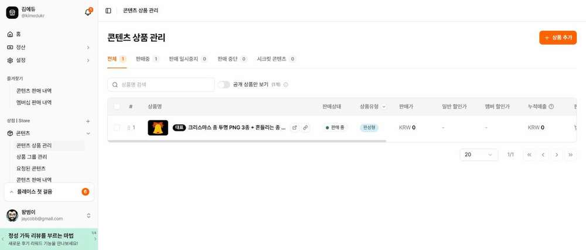
상품이 「판매중」 · 판매가 KRW 0
상품명 · 대표 썸네일 · 판매가 입력. 판매가는 0원도 돼요.
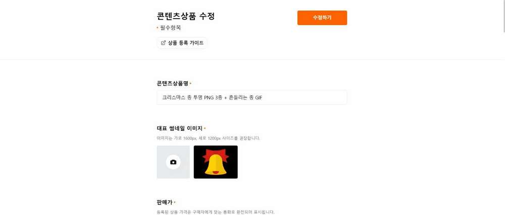
(이미 등록한 상품의 수정 화면) ⚠️ 투명 PNG를 썸네일로 쓰면 이렇게 검은 배경으로 보여요
콘텐츠 제공 방식 다운로드 → 파일 올리기(10GB 이하, 5개까지)
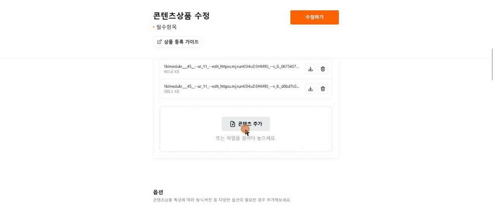
(수정 화면) 투명 PNG 3장 + GIF 1개
한 줄 설명 · 상세 설명. 상세 설명에 [구성] [활용 예] [제작 안내] [사용 범위]를 넣어요.
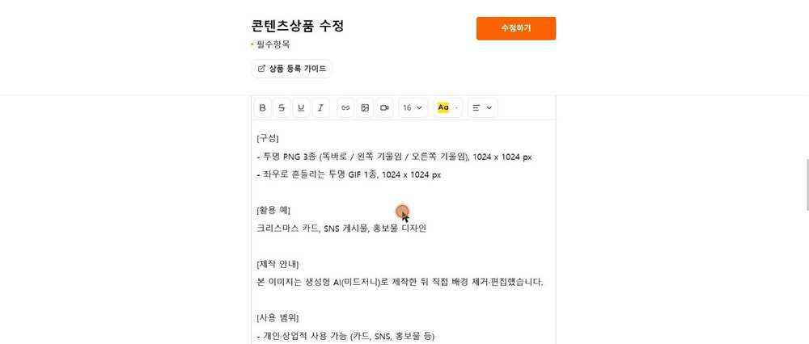
「생성형 AI(미드저니)로 제작」 · 「사용 범위」 명시
맨 위 등록하기(본인이 직접 클릭). 이미 등록한 상품을 고칠 때는 같은 자리가 「수정하기」로 보여요.
크티에서 꼭
사용 범위 한 줄: 크티 기본 안내가 「별도 표기 없으면 상업적 이용 불가」라서, 예) 「개인·상업적 디자인에 자유롭게 사용 가능, 재판매·재배포 불가」
썸네일은 배경 있는 이미지로 따로 만들기 (가로 1600 × 세로 1200 권장)
시세(크티 이미지 상품)
가격
낱개
1,500~3,000원
5~7종 세트
5,000~9,000원
16~23종 세트
9,900~12,900원
한 걸음 더같은 시리즈를 0원 맛보기(1~2장)와 유료 세트(전체)로 나눠 두 상품으로 올리세요. 무료로 받아 본 분이 세트를 사러 와요.
따라하기네이버 OGQ — 스톡 이미지 심사 요청
「손 흔드는 3D 클레이 산타클로스」
creators.ogq.me 에 네이버로 로그인 → 판매 콘텐츠 등록 → 스톡 이미지. 화면 위에 「2단계 인증을 완료해 주세요」 띠가 보이면 프로필 → 인증관리에서 본인이 직접 먼저 완료하세요.
제목(40자) · 내용(160자) · 태그 3~20개(하나 쓰고 Enter) · 가격 무료/유료
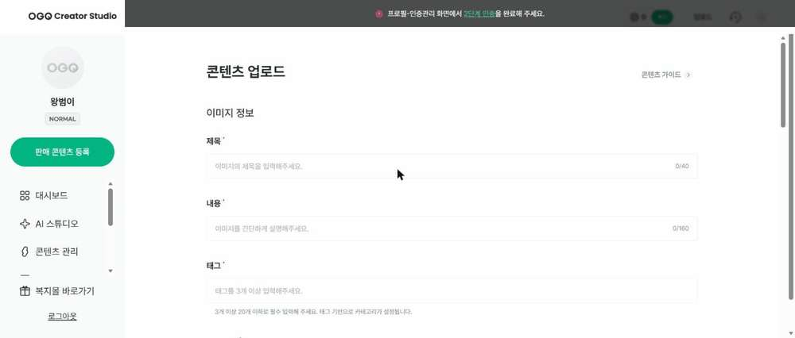
이미지 정보: 제목 · 내용 · 태그
판매 이미지: 2000px 이상 jpg·png (미드저니에서 HD로 받은 2048px)
AI 활용 여부: 처음엔 「AI 미사용」에 점이 찍혀 있어요! 미드저니 그림은 「AI 생성(전부)」으로 바꾸기
⚠️ 기본값 「AI 미사용」 → 「AI 생성(전부)」로
판매 등록 → 콘텐츠 관리에서 심사중 1건 확인
판매중 0 · 심사중 1 · 심사 반려 0
프롬프트 카드 ④ 스톡 판매용 · 미드저니
a cute 3D clay Santa Claus character waving one hand, soft gradient lighting, glossy texture, rich warm colors, full body, single character only, centered, isolated on a pure white background, no shadow on the ground --stylize 200
영어
한글 뜻
왜
3D clay … character
3D 점토 캐릭터
시즌 상품에 인기 있는 질감
waving one hand
한 손 흔들기
동작 하나로 표정이 살아요
full body, single character only
전신, 캐릭터 1명만
잘림·군더더기 없이
isolated on a pure white background
순백 배경
스톡 사이트가 좋아하고 배경 제거도 쉬워요
no shadow on the ground
바닥 그림자 없음
배경 제거할 때 그림자 찌꺼기 방지
--stylize 200
꾸밈 약간 높게
3D 질감이 살아나요
주의
실존 인물·작가 이름·브랜드·유명 캐릭터 이름 금지
애플 이모지처럼 기존 이모지와 닮은 얼굴은 반려·분쟁 위험
한 걸음 더 — OGQ 스티커(이모티콘)24개 세트 · 740×640 · 메인 240×240 · 탭 96×74 · PNG 1MB 이하. 한 장에 24개 그리드로 만든 뒤 잘라 쓰는 방법도 있어요.
STEP 7
한 번에 많이 — 대량 생성 + 디자인허브 일괄 입력
하나씩 만들고 하나씩 올리면 지쳐요. 만드는 것도, 이름표 붙이는 것도 한 번에.
쉽게 말하면 — 미드저니는 중괄호 { }로 여러 장을 한 번에, 디자인허브는 엑셀 한 장으로 이름·키워드를 한 번에.
프롬프트 카드 ⑤중괄호 { } 로 시리즈 한 번에
미드저니 · 4개 작업(16장)이 한 번에 — Basic도 가능
flat vector icon of a Christmas {bell, stocking, gift box, candy cane} with a ribbon, simple bold geometric shapes, only 4 solid colors, no gradient, no texture, no shading, no outline stroke, single object, centered, isolated on a plain light gray background --raw --stylize 50
{ } 안의 단어마다 프롬프트가 하나씩 따로 실행돼요. 같은 문장 틀 = 같은 시리즈 톤 — 3회차 「세트가 팔린다」의 실전판이에요.
주의
Fast 모드에서만 돼요 (Relax 모드 안 됨). Fast 시간이 한꺼번에 많이 들어요
{ } 하나에 넣을 수 있는 개수: Basic 4개 · Standard 10개 · Pro/Mega 40개 — Basic에서 5개를 넣으면 오류
마음에 드는 것만 골라 크게(HD) 받기 — 스톡용은 2000px 이상
한 걸음 더두 칸도 돼요: a {red, navy} Christmas {bell, star} → 2×2 = 4개 작업. 색 시리즈 × 물건 시리즈를 한 번에.
시연디자인허브 — 폴더째 올리고 엑셀로 이름표
디자인허브 → 콘텐츠 업로드 → 단일 요소 업로드 → 「파일 또는 폴더 선택」 → 오늘 만든 폴더를 통째로
지원 파일: PNG · JPG · JPEG · SVG · GIF
올린 파일은 「제출 예정」 목록에 모여요. 위쪽 CSV 업로드 버튼.
「하루 최대 20개 제출, 영업일 6일 이내 심사」 안내
창 아래 「업로드된 모든 콘텐츠 CSV 다운로드」 → 파일 이름·고유 ID가 미리 채워진 표가 받아져요.
SVG element · PNG element · GIF · Photo · Photo(Cut-out) · Background
GIF
.xlsx로 저장 → CSV 업로드 → 제출 예정 목록에 정보가 채워짐 → 확인 후 제출
엑셀이 어렵다면「제출 예정」 목록에서 Shift 또는 Ctrl을 누른 채 여러 개를 클릭 → 오른쪽 칸에 같은 정보(키워드·라이선스)를 한 번에 입력할 수 있어요.
키워드 25개 빨리 만들기 · 챗GPT/제미나이
[상황] 미리캔버스 디자인허브에 크리스마스 요소를 판매 등록하려 한다. 디자인허브에서 받은 CSV를 첨부한다.
[요청] 첨부한 CSV의 행 순서(fileName 순서) 그대로, 행마다 ① elementName(한글, 100자 이내, 특수기호 없이) ② keywords(검색 키워드 25개, 쉼표 구분, 한글 위주)를 채워줘.
[조건] fileName과 uniqueId 열은 절대 바꾸지 말 것. tier는 Premium, contentType은 파일 확장자에 맞게(svg→SVG element, png→PNG element, gif→GIF). 브랜드·캐릭터 이름 금지. 결과는 같은 열 구성의 표로.
붙여 넣을 때fileName·uniqueId 열은 건드리지 말고, elementName·keywords·tier·contentType 칸만 채워서 저장하세요. 행이 한 칸만 밀려도 이름표가 엉뚱한 그림에 붙어요.
한 걸음 더챗GPT·제미나이에 그림 파일을 같이 첨부하면, 그림을 보고 더 정확한 이름·키워드를 만들어 줘요.
주의디자인허브 거부 사유 1위 — 「크롭(여백)」
「대지(Artboard)를 피사체에 딱 맞게 — 상하좌우 여백 없이」상세 정보: 라이선스 스탠다드(무료)/프리미엄(유료) · 요소 이름 · 키워드